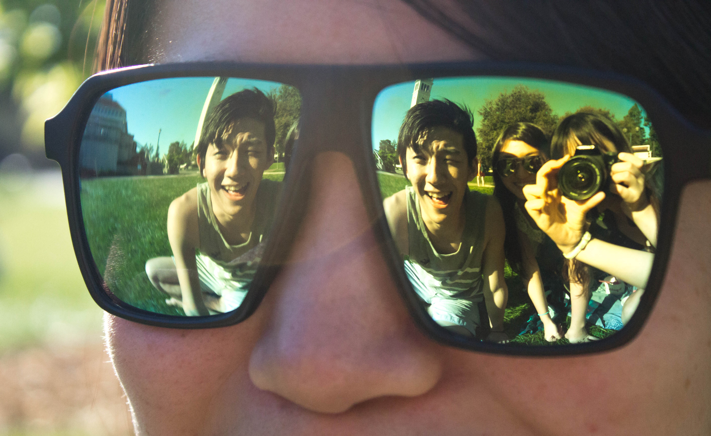
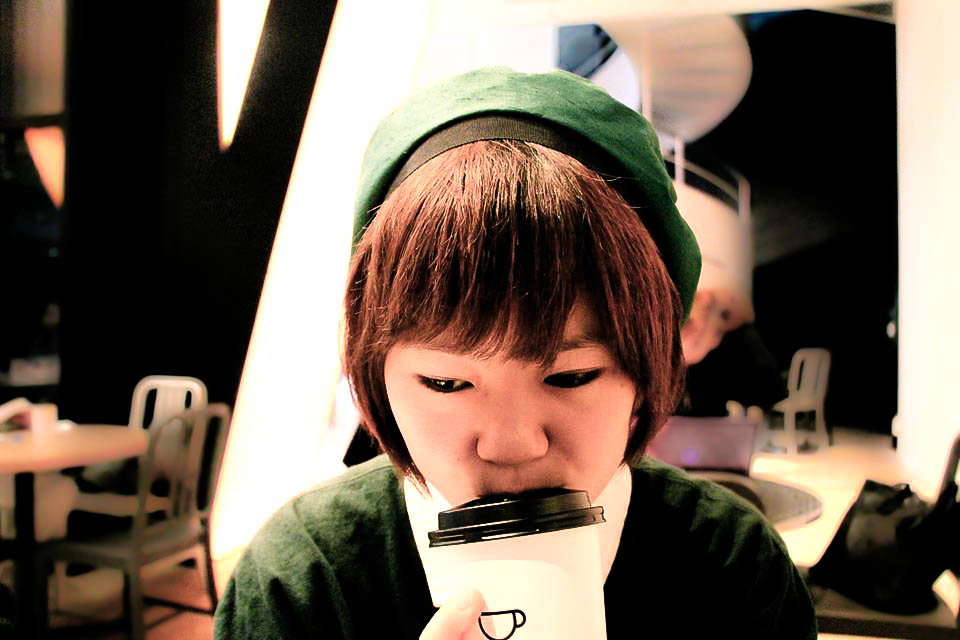

"TRASH"
taken in April 2014
final project for UC Berkeley photography class

taken in March 2014,
"the world in sunglasses"
taken in March 2014,
mid project for UC Berkeley photography class
"jump to somewhere"
taken in March 2014,
mid project for UC Berkeley photography class

"yuiko."
edited in February 2014